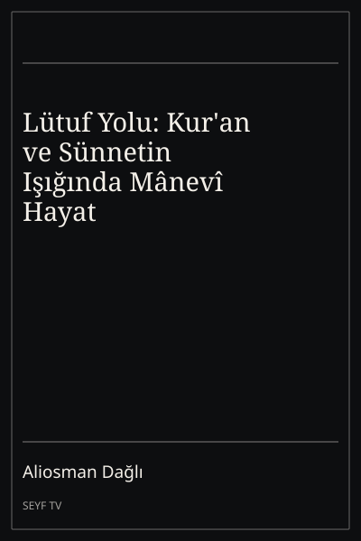

Important Issues · Episode 19
What Is True Piety?
Is religious devotion fulfilled simply by saying “I am a Muslim” or looking religious? When does knowledge become faith, and faith become worship and moral conduct?
Aliosman Dağlı · 9:41 ·
Transcript in the original Turkish
Description
Dindarlık yalnızca “Ben Müslümanım” demekle veya dinî bir görüntüye sahip olmakla tamamlanır mı? Bilgi ne zaman imana, iman ne zaman ibadete ve ahlaka dönüşür?
Dr. Aliosman Dağlı, Mühim Meseleler programının bu bölümünde gerçek dindarlığın ne anlama geldiğini ele alıyor.
Programın başında dindarlığın yalnızca kuru bir şekilcilikten ibaret olmadığı vurgulanıyor.
Bilgi, bilinç, inanç, amel, davranış ve manevi olgunluk…
Aliosman Dağlı’ya göre bu aşamalar birbirini tamamlamadıkça insanın dinî hayatı da eksik kalabilir.
Hucurât suresinden hareketle yalnızca bilgi sahibi olmanın yeterli olmadığı; inancın zamanla teslimiyete, ibadete ve davranışa dönüşmesi gerektiği anlatılıyor.
Namaz, oruç, zekât ve diğer ibadetlerin imanı besleyen ve güçlendiren yönüne dikkat çekilirken Asr suresi üzerinden de iman ile salih amelin birlikte düşünülmesi gerektiği ifade ediliyor.
Bölümün önemli mesajlarından biri:
“İslam ancak yaşandığı zaman ortaya çıkar.”
Programda sadaka kavramı üzerinden de fedakârlık ve sadakat ilişkisi anlatılıyor. Bir insanın inancına ve davasına bağlılığının, gerektiğinde yaptığı fedakârlıkla ortaya çıktığı ifade ediliyor.
Ardından çok önemli bir mesele gündeme geliyor:
Dindar görünmek ile dindar yaşamak aynı şey midir?
Aliosman Dağlı, dinî ifadeleri kullanan veya dış görünüşüyle dindarlık algısı oluşturan bir insanın; aile, ticaret ve günlük ilişkilerinde doğruluk, emanet ve güzel ahlak göstermiyorsa ciddi bir çelişki içinde olduğunu söylüyor.
Hazreti Ömer’e atfedilen bir anlatı üzerinden, bir insan hakkında hüküm vermeden önce onunla yolculuk ve ticaret gibi güvenin sınandığı durumlarda bulunup bulunulmadığının önemli olduğu aktarılıyor.
Programda dindarlığın yalnızca ibadetle değil, sıdk, emanet, fedakârlık, ahlak ve insanlar arasındaki ilişkilerle de ortaya çıkması gerektiği vurgulanıyor.
Sohbetin son bölümünde Fetih suresindeki “secde eseri” ifadesi üzerinden ibadetin insanın yalnızca dış görünüşüne değil; vakarına, davranışına ve manevi hâline de yansıması gerektiği anlatılıyor.
Aliosman Dağlı sohbeti şu yolculukla özetliyor:
Bilgiden bilince, bilinçten amele, amelden ahlaka ve davranışa, davranıştan manevi olgunluğa…
Mühim Meseleler, Dr. Aliosman Dağlı’nın anlatımıyla Seyf TV’de.
00:00 Giriş ve Dua
00:32 Hakkı Hak, Batılı Batıl Bilmek
00:46 Peygamber Efendimizin Tebliğ Görevi
01:14 Dindarlık Sadece Şekil midir?
01:23 Bilgi, Bilinç, İnanç ve Amel
01:42 “Müslümanım” Demek Yeterli mi?
02:14 Bilgiden İnanca Geçiş
02:25 Hucurât Suresindeki Ölçü
02:42 İnanç Amel ve Davranışa Dönüşmeli
02:56 İbadetleri İhmal Etmenin Tehlikesi
03:28 Zayıf Beden ve Zayıf İman Benzetmesi
03:56 İmanı İbadetle Güçlendirmek
04:12 Asr Suresi Dindarlığı Nasıl Özetliyor?
04:46 İman Tek Başına Nasıl Korunur?
05:24 Hazreti Âişe ve Sıdk-Emanet
05:50 “İslam Ancak Yaşandığı Zaman Ortaya Çıkar”
05:56 Sadaka Neden “Sadaka”dır?
06:04 Fedakârlık ve Sadakat
06:33 Nefse Karşı Koymak
06:48 Dindar Görünmek ile Dindar Olmak
07:14 Kıyafet ve Davranış Arasındaki Çelişki
07:35 Hazreti Ömer’den Bir Ölçü
07:56 Yolculuk ve Ticaret İnsanı Tanıtır
08:00 “Namazı ve Orucu Sizi Aldatmasın”
08:15 Dindarlığın Yüze ve Hâle Yansıması
08:26 Secde Eseri Ne Demektir?
08:51 Vakar ve Manevi Olgunluk
09:00 Bilgiden Ahlaka Uzanan Yol
09:24 Kapanış

Books by this speaker


Repertory of Thought
Buy

Lütuf Yolu: Kur'an ve Sünnetin Işığında Mânevî Hayat
Aliosman Dağlı
Şeyh Şaban Lütfullah Efendi (k.s.) Hayatı
Aliosman DağlıFrom this program

Important Issues
People Look at Your Actions, Not Your Words!
Aliosman Dağlı 7:27

Important Issues
Don't Believe Everything You Read!
Aliosman Dağlı 8:44

Important Issues
If You Lack a Guide, You Will Lose Your Way!
Aliosman Dağlı 8:33

Important Issues
The Difference Between Integrity and Self-Righteousness
Aliosman Dağlı 7:33

Important Issues
Should We Listen to Every Idea? Where Is the Boundary Between Reason and Revelation?
Aliosman Dağlı 10:41

Important Issues
How Do We Raise an Exemplary Young Person?
Aliosman Dağlı 12:05

Important Issues
Who Is an Islamic Intellectual?
Aliosman Dağlı 8:41

Important Issues
How Can You Recognize a True Spiritual Guide?
Aliosman Dağlı 8:08